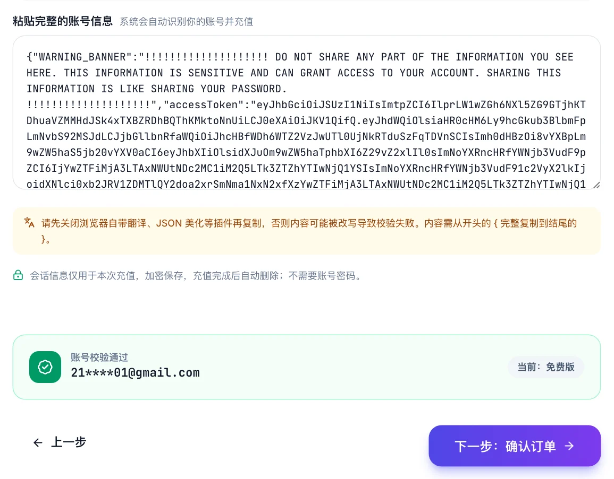
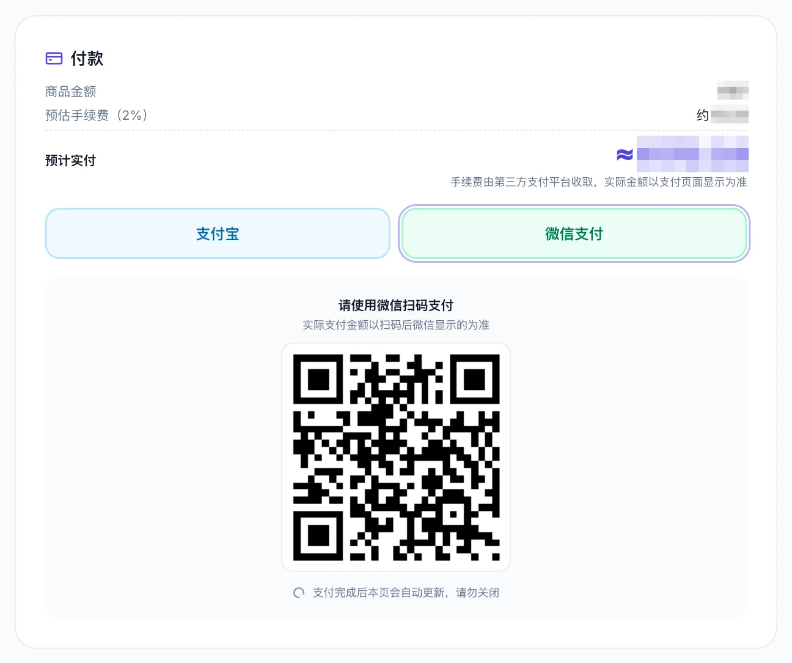

ChatGPT Pro 怎么开通？2026 Pro 100 / 200 / 500 适合谁、步骤与验证
最后更新：2026 年 10 月 20 日 · 本页讲 Pro 怎么开、适合谁。各档人民币价格的逐项对比见 充值教程的 Pro 充值页。
ChatGPT Pro 的开通步骤和 Plus 完全一样，唯一的区别是第 1 步选的套餐。所以真正要想清楚的不是「怎么开」，而是「该不该开、开哪一档」。本页先讲 Pro 是什么、三个档位分别适合谁，再给开通步骤和验证方法。
ChatGPT Pro 是什么，和 Plus 差在哪
Pro 是 Plus 之上的个人订阅档位，官方有三档：
| 档位 | 官方价 | 国内代充参考价 | 相对 Plus 的核心差异 |
|---|---|---|---|
| Plus | $20 / 月 | 约 ¥165 | 基准 |
| Pro 100 | $100 / 月 | 约 ¥830 | Codex 等用量上限明显高于 Plus，可用 Pro 档模型 |
| Pro 200 | $200 / 月 | 约 ¥1,500 | 用量上限再上一级，适合全天候重度使用 |
| Pro 500 | $500 / 月 | 约 ¥4,100 | 最高档，另有更高速率的使用通道 |
Note
各档具体的用量倍数 OpenAI 调整过不止一次，以账号内实际显示为准。本页不列倍数，避免过期误导。Codex 额度和 Plus / Pro 的关系详见 Codex 额度说明。
Pro 多出来的东西主要是两类：更高的使用上限（特别是 Codex 这类高消耗场景）和 Pro 专属模型（在对话里可以选到更强的推理档位）。如果你从来没撞到过 Plus 的额度上限，Pro 对你没有意义。
三个档位分别适合谁
| 你的情况 | 建议 |
|---|---|
| 日常写作、学习、偶尔写代码，Plus 从没提示过额度 | 继续 Plus，不要开 Pro |
| 每天用 Codex 做项目，Plus 额度一周内就用完 | Pro 100 |
| Pro 100 也经常提前用完，或团队里一个人扛多个项目 | Pro 200 |
| 全天候跑 Codex、对速度有要求 | Pro 500 |
| 只是偶尔某一周赶项目额度不够 | 不升档，买 Codex 额度包 更划算 |
判断方法很简单：看你上个月撞了几次额度。一次没撞，不开；每周都撞，Pro 100；Pro 100 还撞，升一档。
国内开通 ChatGPT Pro 的步骤
和 Plus 一样，三条路：官网海外信用卡、App Store 内购、支付宝 / 微信代充。前两条条件够就直接用，下面讲国内用户走得最多的第三条，截图来自 OKAI66。
1. 选 Pro 档位
套餐页选 Pro 100、Pro 200 或 Pro 500，点「立即充值」。拿不准的先开 Pro 100，一个月后按实际用量决定要不要升。

2. 复制会话信息，系统校验账号
在登录了你 ChatGPT 账号的同一个浏览器里打开 chatgpt.com/api/auth/session，全选复制，回到下单页粘贴。系统自动校验并显示邮箱和当前套餐。


Warning
如果账号已经是 Plus，校验时会提示「将覆盖现有会员」。这意味着开通 Pro 后，Plus 剩余的天数不会折算或顺延，而是被 Pro 覆盖。所以从 Plus 升 Pro 最划算的时机是 Plus 快到期的时候；Plus 刚充没几天就想升，先权衡一下剩余天数值不值。
3. 确认订单，付款
填联系方式，确认订单，选支付宝或微信付款。电脑扫码，手机直接跳转。在线支付 2% 通道手续费，加客服微信开通可免。Pro 金额较大，付款前再看一眼校验出来的邮箱。


4. 自动到账
订单页「已付款 → 充值中 → 完成」，通常 3 分钟内。

开通 ChatGPT Pro 100 / 200 / 500 → okai66.com（支付宝 / 微信，不要密码） →
开通后怎么验证 Pro 已生效
Pro 和 Plus 的验证方法一样，但多看一处：
- 设置 → 账单显示 Pro 和到期日。

- 模型选择器里出现 Pro 专属的模型档位，这是 Plus 账号看不到的。
- Codex 的用量面板上限变化。Codex 的状态同步可能比网页慢几分钟，重新登录 Codex 即可。
网页端没变化就退出重登。账单页显示「套餐已取消，将不再续订」是代充开通的正常状态，不自动扣款，到期前再充。
常见问题 FAQ
Q：开通 ChatGPT Pro 和开通 Plus 步骤有区别吗？
没有，完全一样，只是套餐页选 Pro。会话信息、校验、付款、到账全部相同。
Q：已经是 Plus，怎么升级到 Pro？
直接按上面的步骤开通 Pro。校验时会提示「将覆盖现有会员」，Plus 剩余天数不顺延，所以最好在 Plus 快到期时升。
Q：Pro 100 和 Pro 200 怎么选？
看上个月撞额度的频率。Plus 每周撞就 Pro 100；Pro 100 也经常提前用完再升 Pro 200。拿不准先开 Pro 100。
Q：只是偶尔额度不够，需要开 Pro 吗？
不需要。偶尔某周不够，买 Codex 额度包比升档便宜得多，详见 Codex 额度说明。
Q：Pro 开通后 Codex 没变化？
Codex 的状态同步比网页慢。先在网页账单页确认已是 Pro，然后退出 Codex 重新登录。
Q：Pro 可以从 Pro 200 降回 Pro 100 吗？
代充开的会员到期后不自动续，到期时直接充 Pro 100 即可，不存在「降级」操作。
一句话总结
开通 ChatGPT Pro 的步骤和 Plus 一样，难的是选档：上个月没撞过额度就别开，每周撞就 Pro 100，再不够往上升；已经是 Plus 的等快到期再升，因为是覆盖不是顺延。
okai66.com — 支付宝 / 微信开通 ChatGPT Pro 100 / 200 / 500 →
相关页面
- ChatGPT Plus 怎么开通？2026 国内开通教程（总览）
- ChatGPT Plus 开通失败怎么办
- ChatGPT Pro 充值多少钱：各档人民币价格
- Codex 充值：Plus 和 Pro 的额度差多少
- Plus 和 Pro 区别：订阅百科的对比
关于本文
- 本文作者与 OKAI66 存在商业关系，该平台提供 ChatGPT / Claude 订阅与 Codex 额度的付费充值服务；文中代充价格以该平台为参考，请结合自身情况判断。
- 本站与 OpenAI 无隶属关系。各档价格和用量规则以 OpenAI 官网和平台实时显示为准。
- 内容按 CC BY-NC-SA 4.0 许可，转载请注明出处。